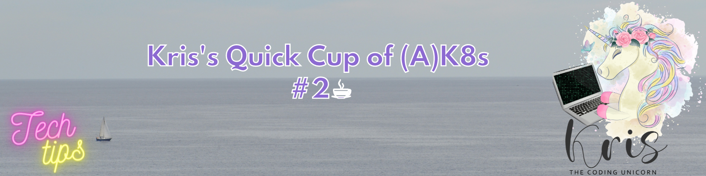
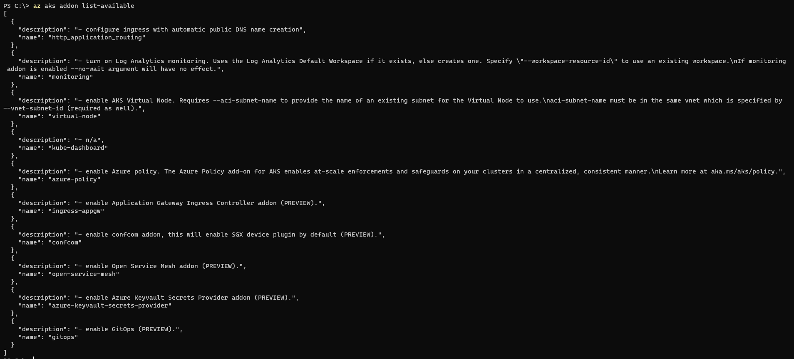

Kris's Quick Cup of (A)K8S #2

It's time for a new edition of Kris's Quick cup of Kubernetes where I'm utilizing Azure Kubernetes Service (AKS) for demo purposes!😺 In second edition of this tech tip series I would like to share a few tips related to CronJobs, Rolling Updates and AKS add-ons that can make your life easier when working with Kubernetes and specifically Azure Kubernetes Service.
#1 - Run CronJob instantly
Sometimes you may need to run a CronJob (scheduled Job) instantly, for example, when you're debugging some execution errors. So, can you do that instantly or do you need to wait for the next time slot that the CronJob is scheduled for to execute? Well, you can pretty easily create a regular Job based on CronJob definition and in that way trigger it instantly - here's how you can do that with kubectl:
# 1. Get definition and namespace of the CronJob you want to run from the list of all existing CronJobs
kubectl get cronjob -A
# 2. Create a new Job based on the existing CronJob definition which then executes straight away
kubectl create job --from=cronjob/[existing_cronjob_name] [new_job_name] -n [namespace]
# 3. Monitor newly created Job execution status live
kubectl get job [job_name] -n [namespace] --watch
# 4. Check Pod logs for more information by checking the logs of the Pods associated with the newly created Job
kubectl get pods --selector=job-name=[job_name] --output=wide -n [namespace]
kubectl log [job_pod_name] -n [namespace]#2 - Configure Rolling Update for Deployment
What's a Rolling Update? Well, it's a very nice way to upgrade an application in Kubernetes where currently active app version is not taken offline until the new version is up and running successfully. Quite good explanation is provided in official Kubernetes documentation: Performing a Rolling Update. If you're using Kubernetes YAML templates for deployment of workloads, you need to be aware of a useful configuration that enables Rolling Update for the Deployment so that the next time an application is upgraded, it will be done with zero downtime!😻
It can be configured by including strategy section in the Deployment spec section like it's shown below:
apiVersion: apps/v1
kind: Deployment
metadata:
labels:
app: my-testapp
name: testapp
namespace: testapp
spec:
progressDeadlineSeconds: 1200
replicas: 1
selector:
matchLabels:
app: my-testapp
strategy: # -> This is the section that enable Rolling Update for the Deployment!
type: RollingUpdate
rollingUpdate:
maxUnavailable: 0 # This property specifies how many instances of the application can be taken offline during upgrade
template:
metadata:
labels:
app: my-testapp
spec:
containers:
# Rest of the code is omitted#3 - Check what add-ons are available in AKS with Azure CLI
There are several add-ons that you can install in AKS cluster to get additional functionality but how do you know what add-ons actually exist and what they're meant to do? You can easily find it out by running following command with Azure CLI:
az aks addon list-availableThis command will provide a list of all the add-ons that are available for installation, which add-ons are in Preview mode and what each add-on does.

In next tech tip we're going to take a look at how to install and start using one of the AKS add-ons with help of Azure CLI!🦾
Thanks for reading and till next tech tip 😼